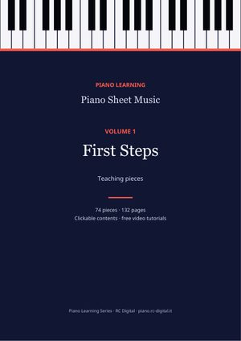
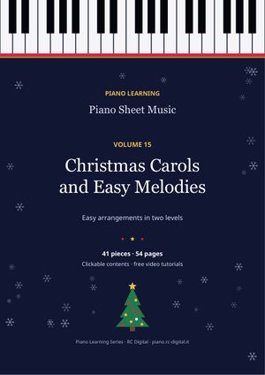
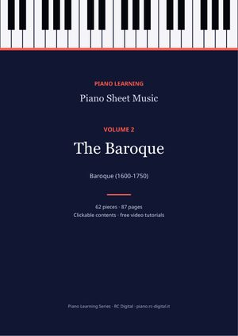
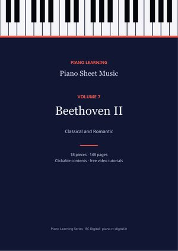
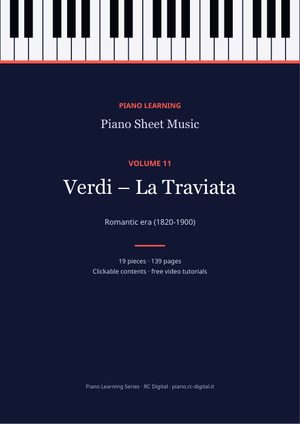
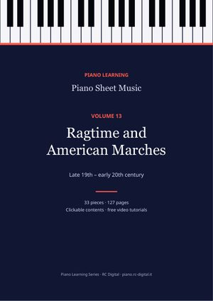
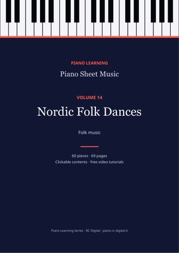
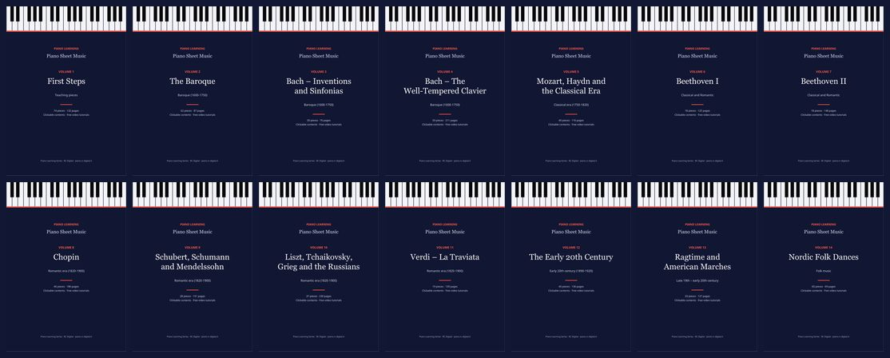

Teaching pieces
Volume 1First Steps
Easy studies and pieces: Burgmüller, Czerny, Hanon, Schumann (Album for the Young), Kuhlau.
74 pieces · 132 pages
€3.99Buy
Piano Learning · PDF
14 volumes arranged by composer and period, with clickable contents, composer biographies and a link to the video tutorial of every piece that has one. Every purchase includes the PDF in 10 languages.
€55.86€19.99−64%

41 pieces · 54 pages
41 pieces in easy two-level arrangements: 16 Christmas carols and 25 famous tunes.
Tap a title in the contents and you are on the right page. Bookmarks are included too.
A few lines about who wrote the music you are playing.
From the score to the falling-notes video, for every piece that has one.
One purchase lets you download the edition in the language you prefer.
The first page of four pieces from the series. Tap a page to open the piece.

Easy studies and pieces: Burgmüller, Czerny, Hanon, Schumann (Album for the Young), Kuhlau.
74 pieces · 132 pages

Bach (minuets, polonaises, little preludes, chorales), Handel, Scarlatti, Rameau, Pachelbel.
62 pieces · 87 pages

All 15 two-part Inventions and 15 three-part Sinfonias.
30 pieces · 76 pages
Preludes and fugues from The Well-Tempered Clavier, English and French Suites, Suite BWV 1006a, The Art of Fugue.
59 pieces · 211 pages
Rondo alla turca, Sonata facile, Fantasia in D minor and other 18th-century classics.
40 pieces · 116 pages
Für Elise, the Moonlight Sonata, the Pathétique, variations and sonatas.
18 pieces · 125 pages

The Appassionata and the great sonatas.
18 pieces · 148 pages

The 24 Preludes, Nocturnes, Waltzes, Études and Ballades.
46 pieces · 186 pages

Schubert's 8 Impromptus, Scenes from Childhood, Songs without Words, Brahms.
28 pieces · 151 pages

Consolations, The Seasons, Peer Gynt, Pictures at an Exhibition and other Romantics.
37 pieces · 230 pages

The complete opera arranged for solo piano, number by number.
19 pieces · 139 pages
Debussy, Satie, Rachmaninoff, Scriabin, Bartók.
40 pieces · 136 pages

Scott Joplin, John Philip Sousa and others.
33 pieces · 127 pages

Traditional Swedish and Finnish dances.
60 pieces · 69 pages

Five single volumes cost €19.95. The complete series, with all 14, costs €19.99.
€55.86€19.99−64%
All 14 volumes: 564 pieces, 1,933 pages of music.
PDF. You can open it on a computer, tablet or phone, and print it. Every volume is a single file with clickable contents and bookmarks.
Every purchase includes the edition in 10 languages: Italian, English, German, Spanish, French, Portuguese, Russian, Chinese, Japanese and Korean. You download the one you prefer.
Right after payment the download page opens and you receive an email with the link. Each single volume is a PDF; the complete series is one ZIP file per language with the 14 PDFs (about 50 MB).
Yes. These are free editions (public domain or Creative Commons) and the pages of this site link to each piece for free. The series gives you all of them arranged by composer and period, with contents, biographies, tutorial links and full credits for every edition.
No. Volume 15, “Christmas Carols and Easy Melodies”, is sold separately for €3.99. The complete series includes volumes 1 to 14.
Save 64% compared with the 14 single volumes (€55.86).
€55.86€19.99−64%
Secure payment with Payhip and instant download by email. The scores are free editions (public domain or Creative Commons): you can also find them for free, piece by piece, on the pages of this site; here you get them all organised in one file, with full credits for every edition.